Mycotecture: Design for Biodegradable Architecture
Summary
Buildings cannot be designed for permanence. Its materials and construction system may be long-lasting, but building uses are always exhaustive. At the end of the building lifespan, non degradable materials remain in the landfill. To reduce material and construction waste, design needs to consider the end of life in a product as much as the creation of it. What if architecture can be designed to be constantly revived and reused?This thesis presents a construction strategy for interlocking mycelium composites as replaceable structural modules that could be periodically replaced, extending the lifespan while varying the architecture. The methodology is derived from concepts of discrete element assembly, implemented for biocompatible materials. The research was carried out in two scales; (a) at the scale of the ‘part’ such as foundation, column, beam, joint, and floor slab component, which would be studied to form a set of interlocking geometry that allow for easy installation and de-installation process; and (b) an investigation on aggregating ‘whole’, whereby elements are aggregated using Wasp to generate bays of walls, flooring and cantilever roof.
About Me
Hello! I'm Cindy Witono, b. 1996, Singaporean PR, and is an upcoming Master of Architecture Graduate from Singapore University of Technology and Design. I am also a freelance illustrator, installation artist, and national powerlifting athlete. My design approach often revolves around my deep interest in the environment, technology and challenging the user experience.Name
Cindy Witono
Mentor
Christine Yogiaman/Kenneth Tracy
Typology
Biomass Composite Material, Discrete Element Assembly, Digital Fabrication
Site Location
Ubud, Bali, Indonesia

![]()
![]()
![]()
![]()
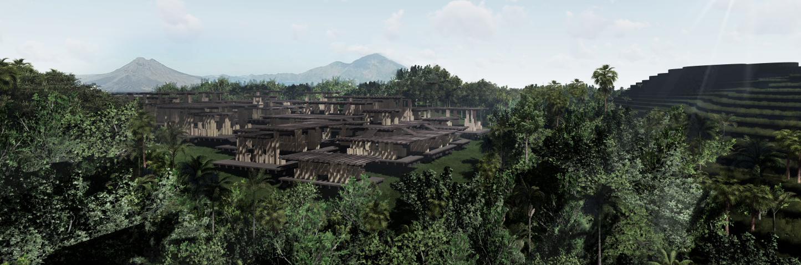
Circular Economy by Organising Localised Agricultural Production Cycle
In Circular Economy, product design & manufacturing considers the product’s entire lifespan including, or especially, its end of life. Instead of letting the product go to waste after one use, it’s repaired and reconditioned to extend its lifespan, until the components are worn out before it gets recycled into a new product life, leaving very little into the landfill. A more effective system of circular economy occurs when the entire loop is localised and produced on biocompatible materials. When the resources, manufacturing and labour are localised, the system encourage the community and site to be self-sufficient, and the energy in transportation is conserved. Using biomaterials also assure that the system is thoroughly clean, in comparison to a circular production system using synthetic materials.Mycelium has shown extensive potential to be used in design and architecture. With recent developments in digital fabrication, biocomposites made of mycelium have evolved into structurally sound structures. Due to the softness of its materiality, many of these structures are reliant on tension and compression, as loads and forces are optimised through the geometry of the material.

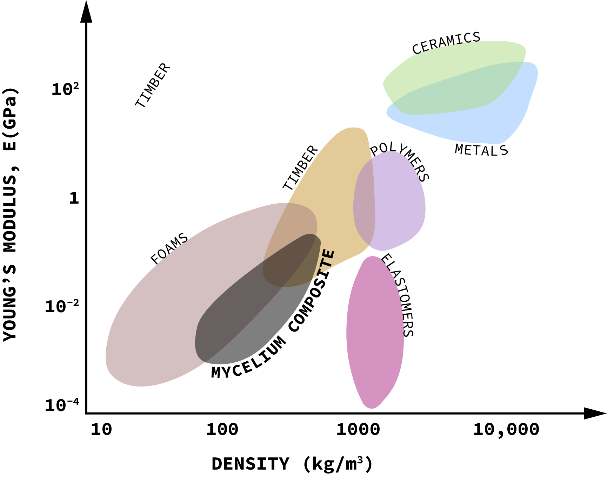
Firstly, discrete economies will allow for damage and modification to be isolated and treated in parts. This way, repair and recondition could be done without affecting the rest of the structure, and waste less parts in the process. Secondly, the parts would be aggregated to achieve redundancy, so as to have parts that are acting as standby components in the structure. By incorporating redundant parts, expected removal of parts could go on as loads are shifted onto standby parts and the structure would remain stable.
Geometric Approach Towards Biomass Composite Material
With its foam-like characteristic, mycelium composites require a different attitude towards its geometric strategy to ensure structural integrity and logistic efficiency. This research pursues goals of discrete fabrication to ensure replaceable, adaptable and open-ended architecture. There are two principles that would be driving the methodology.Firstly, discrete economies will allow for damage and modification to be isolated and treated in parts. This way, repair and recondition could be done without affecting the rest of the structure, and waste less parts in the process. Secondly, the parts would be aggregated to achieve redundancy, so as to have parts that are acting as standby components in the structure. By incorporating redundant parts, expected removal of parts could go on as loads are shifted onto standby parts and the structure would remain stable.

The building and construction strategy should support the logistics of repair and recondition. To achieve an effective product lifespan by extending it through repair and recondition, the expected life cycles of various architectural systems was distinguished. Essentially, the foundation which is the connection to ground, would be less prone to change, as it is hardest and riskiest to shift around. On the other hand, the partition is expected to change more with the interior use.
Aggregating to a point of redundance provides flexibility and options during repair and replacement process. When one part is being removed for repair, redundant parts around it would be activated. The load could redistributed, hence allowing the structure to remain functional even though parts are being removed. 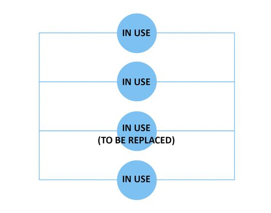
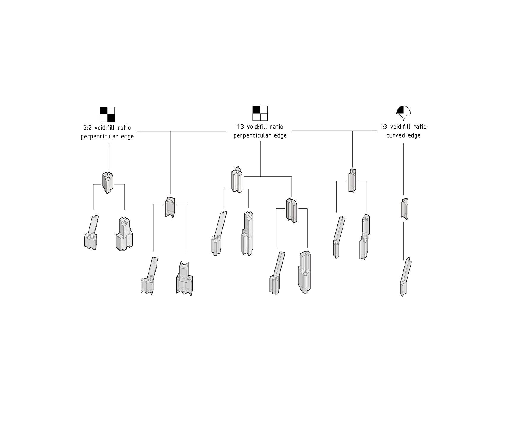
Topological interlocking principle is adapted as methodology to develop mycelium composites as discrete elements and to ensure replaceability while also possessing structural integrity. Interlocking assemblies are capable to remain firmly in-tact and withstand destabilising forces. The discrete components are force-locked onto each other’s contact surface, and would be kinematically compressed in place. 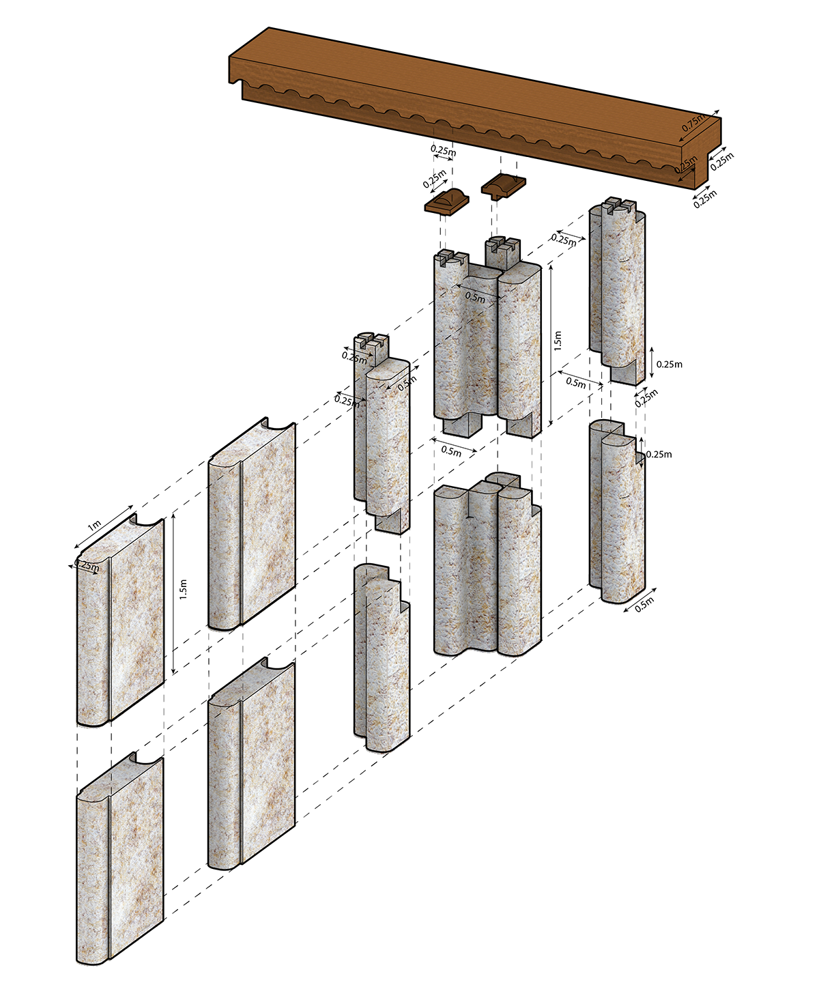
Topological interlocking principle is adapted as methodology to develop mycelium composites as discrete elements and to ensure replaceability while also possessing structural integrity. Interlocking assemblies are capable to remain firmly in-tact and withstand destabilising forces. The discrete components are force-locked onto each other’s contact surface, and would be kinematically compressed in place. 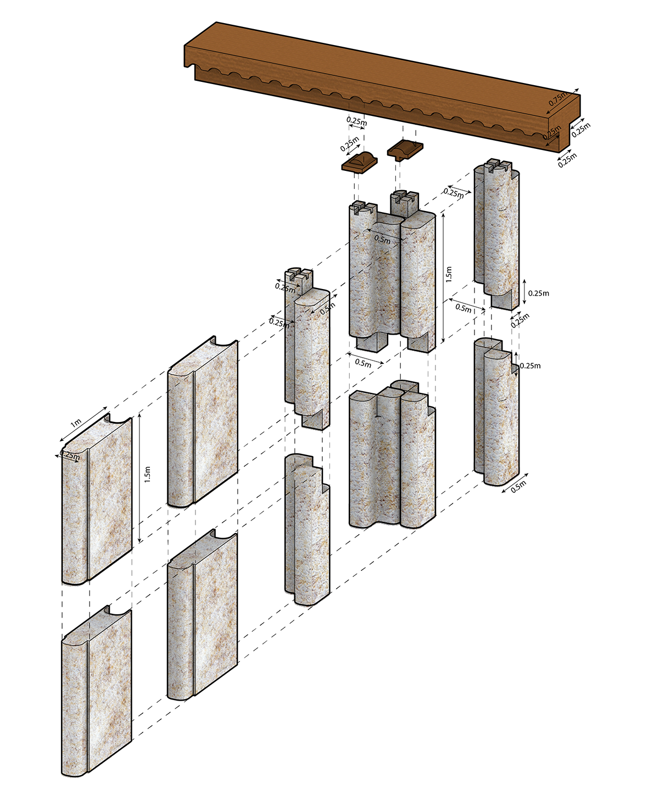
 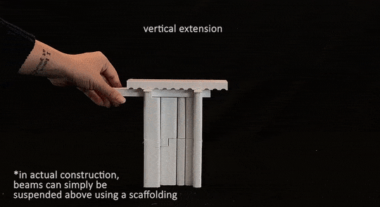
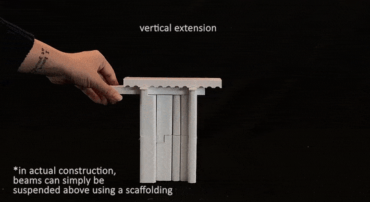
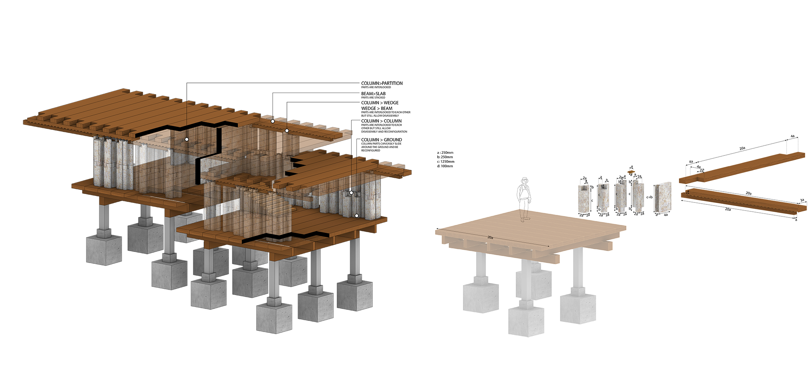
The system was then implemented on a site with undulating terrains and high agricultural yields; specifically, in Ubud, Bali. The site offers an opportunity for the architecture to respond towards the site topology by reflecting the terrains with terraced pavillions. Most importantly, the context allow for a closed loop agricultural circular economy to be achieved through its production, construction and decomposition cycles.


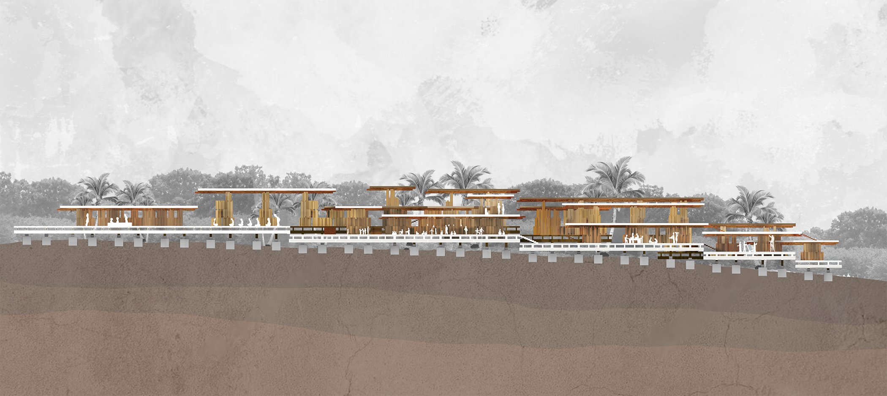

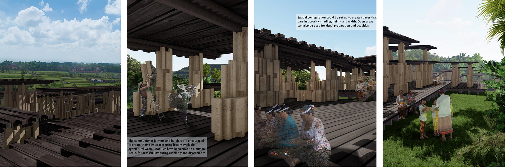